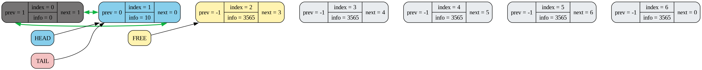
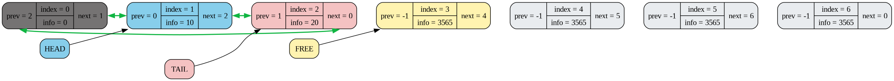
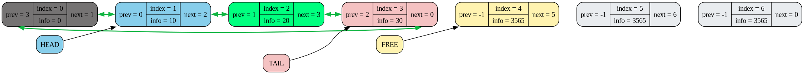
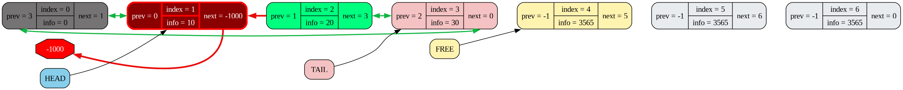
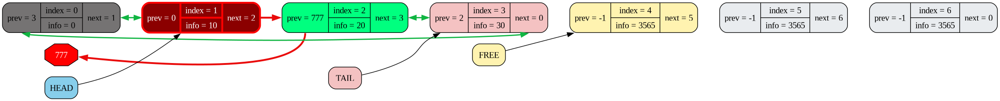
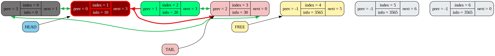
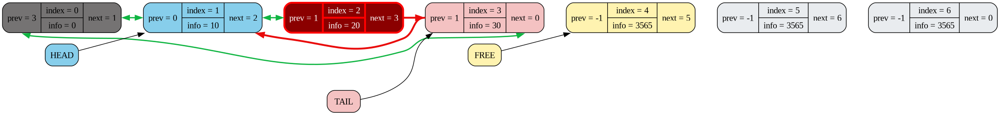
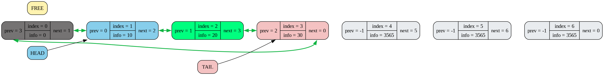
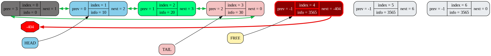

adding new elem with key [1] Capacity: 6 Free: 2 Head: 1 Tail: 1

adding new elem with key [2] Capacity: 6 Free: 3 Head: 1 Tail: 2

adding new elem with key [3] Capacity: 6 Free: 4 Head: 1 Tail: 3

WARNING: Ignored operation. Invalid key [100] passed, list_size is [3]
Called from src/list.cpp, function place_after, line 158

WARNING: Ignored operation. Invalid key [-5] passed, list_size is [3]
Called from src/list.cpp, function delete_elem, line 106

TEST 2: NEXT at node [1] (next = -1000)
Called from src/main.cpp, function main, line 19

TEST 3: PREV at node [2] (prev = 777)
Called from src/main.cpp, function main, line 26

TEST 4: (node [1].next = 3, but node [3].prev = 2)
Called from src/main.cpp, function main, line 33

TEST 5: (node [3].prev = 1, but node [1].next = 2)
Called from src/main.cpp, function main, line 40

TEST 6: Corrupted FREE pointer (free = 999)
Called from src/main.cpp, function main, line 47

TEST 9: Corrupted NEXT inside FREE list at node [4]
Called from src/main.cpp, function main, line 54
